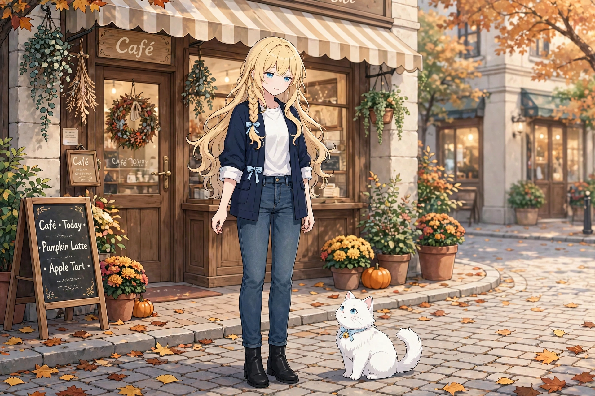

シャツワンピースの選び方と羽織り活用（40代）

セラフィナ：先に結論です。シャツワンピースは「前開きで羽織れること」「袖丈が肘近くまであること」「1枚でも透けない生地」の3点で選ぶと、着回しが効きます。この記事の商品は、この3点に合うものだけを先に並べます。
この記事の商品（先に比較）
| 商品 | 価格（税込） | お店 |
|---|---|---|
| [antiqua] Aライン ロング シャツワンピース レディース PK-014 | 7,990円 | antiqua |
| [antiqua] ドット柄 Aライン シャツワンピース UK-00144 | 11,990円 | antiqua |
| Vネックロングワンピース レディース ワンピース | 4,053円 | Doux Belle |
目安1：前開きは羽織りになる
ボタンを開ければロングカーディガン代わりになります。縦の線ができるので、体型カバーの面でも有利です。
目安2：袖丈で二の腕もカバー
長袖か七分袖なら、二の腕カバーと羽織りを兼ねられます。夏は袖をまくる調整もできます。
目安3：生地は透けない厚み
1枚で着るなら、下着が透けない厚みが前提です。薄手のものは羽織り専用と割り切ってください。
あえて推さないもの
- ボタンが途中までしかない形（羽織りに使えません）
- ウエストの紐が細くて食い込むもの（お腹が目立ちます）
- シワが目立つ薄い綿だけの生地（だらしく見えます）
この記事の目安に合う商品
特徴：ロング丈のシャツワンピースを中心に選びました。
PR：この記事のテーマに合うシャツワンピース（PR）
![[antiqua] Aライン ロング シャツワンピース レディース PK-014](https://tshop.r10s.jp/stylife/cabinet/item/989/sk1989-03_1.jpg?fitin=600%3A720&composite-to=center%2Ccenter%7C600%3A720)
![[antiqua] ドット柄 Aライン シャツワンピース UK-00144](https://tshop.r10s.jp/stylife/cabinet/item/319/sv1319-01_1.jpg?fitin=600%3A720&composite-to=center%2Ccenter%7C600%3A720)

あわせて読みたい：ワンピース種類別ガイド／ぽっこりお腹カバー ワンピースの選び方